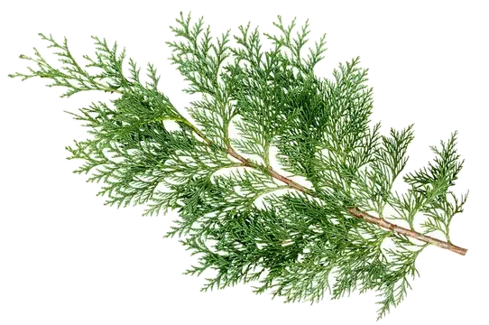

Oil Grimoire
Cypress Essential Oil
Cypress Essential Oil is steam-distilled from the needles and twigs of the Mediterranean cypress tree (Cupressus sempervirens), producing a clean, fresh oil with deep magickal associations with death, transformation, and protection.
Botanical Information
Scientific name: Cupressus sempervirens
Botanical family: Cupressaceae
Origin: Mediterranean region
Source: Needles and twigs
Evaporation: Middle note
Scent Profile
Description: Fresh, clean, woody, slightly balsamic
Impact: Grounding, centering, spiritually elevating
Magickal Correspondences
Element: Earth
Planets: Saturn, Pluto
Signs: Scorpio, Capricorn, Aquarius
Magickal uses: Blessing, consecration, protection, healing, longevity, comfort in grief
Magickal Uses
Cypress excels in blessing and consecrating ritual tools, spaces, and objects. Add to anointing oils for dedication ceremonies.
Use in protective blends to create strong boundaries. Cypress guards against negative influences while maintaining connection to ancestral wisdom.
Particularly suited for emotional healing work, especially around grief, loss, and transformation. Diffuse during times of mourning or major life transitions.
The tree's association with cemeteries and eternal life makes cypress oil valuable for work involving ancestors, death acceptance, and finding peace in endings.
Blending
Cypress blends well with patchouli (as in the Ambergris Bouquet substitute), lavender, sandalwood, and other woody or earthy oils.
Spellwork Correspondences
Rub oil from center to either end to dress the candle, from top to bottom to draw energy toward you, or bottom to top to banish. Oils are flammable; use with care. Spellwork uses include calmative, soothes emotions, stability, and the Underworld.
Extraction & Characteristics
The essential oil is steam-distilled from the needles and twigs. An oil from the cones is occasionally available, and small quantities of concrete and absolute are also produced. The oil is a pale yellow to greenish-olive mobile liquid with a smoky, sweet-balsamic, tenacious odour. Principal constituents include pinene, camphene, sylvestrene, cymene, and sabinol, among others.
Related Species
Many other species of cypress worldwide are used to produce essential oils, including C. lusitanica from Kenya. With regard to oil quality, C. sempervirens is considered superior.
Folk Tradition
Ancient civilizations valued cypress as both a medicine and an incense, and Tibetans still use it as a purification incense. It benefits the urinary system and is considered useful where there is excessive loss of fluid, including heavy perspiration, menstrual loss, and diarrhoea. The cones were noted as very drying and binding, useful for stopping fluxes of all kinds. Chinese tradition considers the nuts nutritious, beneficial for the liver and respiratory system, and helpful for checking profuse perspiration.
Therapeutic Uses
In skin care, cypress addresses haemorrhoids, oily and overhydrated skin, excessive perspiration, varicose veins, wounds, and pyorrhoea (bleeding of the gums), and serves as an insect repellent. For circulation, muscles, and joints, it works on cellulitis, muscular cramp, oedema, poor circulation, and rheumatism. In the respiratory system, it addresses asthma, bronchitis, and spasmodic coughing. In the genito-urinary system, it eases dysmenorrhoea, menopausal problems, and menorrhagia. For the nervous system, it supports nervous tension and stress-related conditions.
Full Blending Profile
Cypress blends well with cedarwood, Pine Essential Oil, Lavender Essential Oil, mandarin, Clary Sage Essential Oil, Lemon Essential Oil, Cardamom Essential Oil, Moroccan Chamomile Essential Oil, Ambrette Seed Essential Oil, labdanum, Juniper Berry Essential Oil, Benzoin Absolute, Bergamot Essential Oil, Orange Essential Oil, Marjoram Essential Oil, and Sandalwood Essential Oil.
Safety
Non-toxic, non-irritant, and non-sensitizing.
Where You Will Encounter It
Cypress is used in some pharmaceutical products and as a fragrance component in colognes, after-shaves, and perfumes.
Therapeutic Applications
- Dysmenorrhoea: Apply via massage, compress, or bath.
- Nervous Tension and Stress: Apply via massage, bath, or vaporization.
- Chronic Coughs: Apply via massage, vaporizer/diffuser, or steam inhalation.
- Bronchitis: Apply via massage, vaporizer/diffuser, or gentle inhalation.
- Asthma: Apply via massage, vaporizer/diffuser, or gentle inhalation.
- Rheumatism: Apply via massage, compress, or bath.
- Cellulite: Apply via massage, skin oil/lotion, or bath.
- Excessive Perspiration: Apply via skin oil/lotion or bath.
- Hemorrhoids: Apply via skin oil/lotion, compress, or bath.
- Insect Repellent: Apply via skin oil/lotion or vaporization.
- Low Blood Pressure: Apply via massage or bath.
- Mouth & Gum Infections/Ulcers: Apply via skin oil/lotion or compress.
- Muscular Cramp & Stiffness: Apply via massage, compress, or bath.
- Poor Circulation: Apply via massage or bath.
- Varicose Veins: Apply via skin oil/lotion or compress.
- Wounds: Apply via skin oil/lotion, compress, or bath.
- Oedema & Water Retention: Apply via massage or bath.
- Menorrhagia: Apply via massage or bath.
- Menopausal Problems: Apply via massage, bath, or vaporization.
Traditional Grimoire Notes
An oil of Saturn, it vibrates on a high plane, as all oils of Saturn do. An oil of blessing, consecration, and protection, it brings peace and relaxation, controlling the self-willed. It is a symbol of the Earth element, as well as of death. It also effectively screens out the negative vibrations of funeral mourners. Wear on Halloween (Samhain) to become aware and remember those who have passed on.